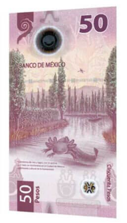
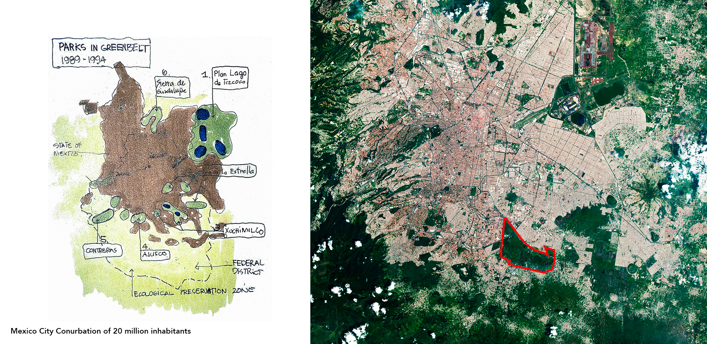
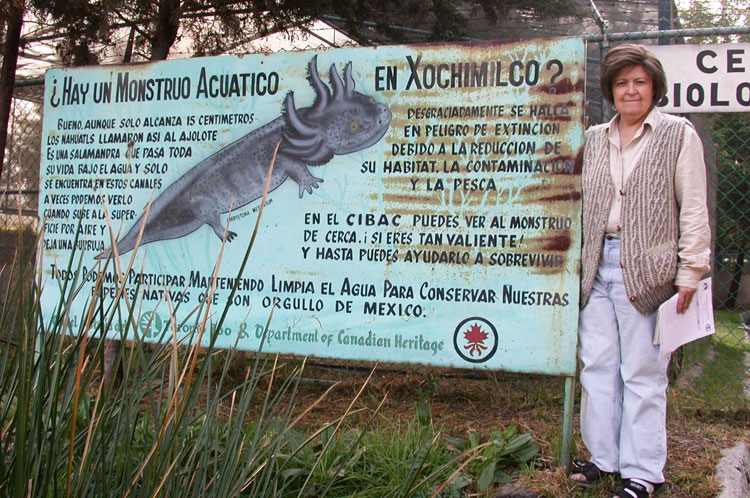
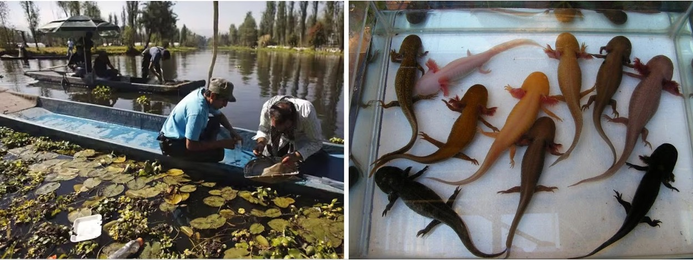
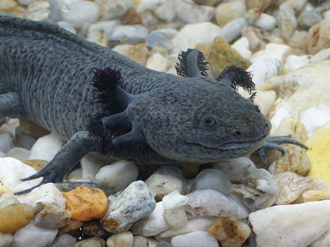

Earth is entering a period of unprecedented change. As anthropogenic activities drive global warming and rapid biodiversity loss, few creatures symbolize the struggle between urban expansion and nature quite like the Mexican Axolotl (Ambystoma mexicanum).

A National Icon in Peril
The Axolotl is celebrated enough to be featured on Mexico's 50 Peso note, yet it is critically endangered in the wild. This paradox highlights a crucial gap between cultural appreciation and environmental reality.
The Urban Threat
In the sprawling metropolis of Mexico City, conservation isn't just about biology—it's about survival in an urban jungle. The Axolotl's only remaining natural habitats, Lake Xochimilco and Lake Chalco, are under immense pressure.
Surrounded by a conurbation of over 20 million inhabitants, these ancient waterways face severe habitat degradation. The challenge is stark: How do we protect a delicate aquatic species when it lives in the shadow of one of the world's largest cities?

A Question of Environmental Justice
To save the Axolotl, we must look beyond traditional conservation methods. The current crisis is a matter of Environmental Justice. The loss of biodiversity affects global populations, yet it is often driven by the activities of specific societal groups.
"If we want to grow good citizens, then let us teach reciprocity. If we want to aspire to justice for all, let it be justice for all of creation."
— Robin Wall Kimmerer, Braiding Sweetgrass
Modern conservation strategies in Xochimilco are shifting perspective. They are adopting a "Multilevel Perspective" framework that values diverse viewpoints and prioritizes the redistribution of decision-making power. It acknowledges that local communities are not just bystanders; they are the guardians of the land.

Community at the Core
Successful conservation requires moving from top-down mandates to community-based solutions. In Xochimilco, this means engaging stakeholders like the remeros (boat operators), farmers, and local residents.
By understanding the "Social Practice Theory"—how resource use and cultural meanings shape beliefs—conservationists can foster lasting behavioral changes that benefit both the people and the Axolotl.
Science in Action: The Remeros Partnership
One of the most promising developments has been the partnership between researchers and the local community. Fishermen and tour boat operators have joined forces with scientists to model Axolotl habitats.
Using past population survey data combined with rigorous water quality sampling, these teams have identified a critical finding: Axolotls prefer freshwater low in minerals and pollution, specifically near submerged ground-fed springs.

The Path Forward
The fight for the Axolotl is far from over, but the path forward is becoming clearer. It requires a blend of legislative support, financial investment, and unwavering community engagement.
- Legislative Support: The Mexican Natural Resources Commission must prioritize habitat preservation policies.
- Stakeholder Engagement: Continued partnerships with academia, zoos, and local workers are essential.
- Sustainable Development: Cities must balance urban growth with the preservation of green and blue spaces.

A Model for the World
The conservation of the Axolotl represents the intersection of environmental justice and sustainable urban development. If we can save this "water monster" in the heart of a megacity, we create a template for urban conservation initiatives worldwide.
References & Further Reading
- American Association of Landscape Architects. (n.d.). Xochimilco Ecological Park.
- Bride, I. G., et al. (2008). Flying an amphibian flagship: conservation of the Axolotl through nature tourism.
- Contreras, V., et al. (2009). Recent decline and potential distribution in the last remnant area of the microendemic Mexican Axolotl.
- Martin, A., et al. (2020). Environmental Justice and Transformations to Sustainability.
- Mexico Lore. (2019). Axolotl.